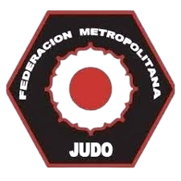

La Federación Metropolitana de Judo trabaja para el desarrollo, organización y difusión del judo, promoviendo los valores del deporte y la formación integral de sus practicantes.

Las 5 fotografías con mayor cantidad de "Me gusta" otorgados por la comunidad FMJ.
Ver galería completa